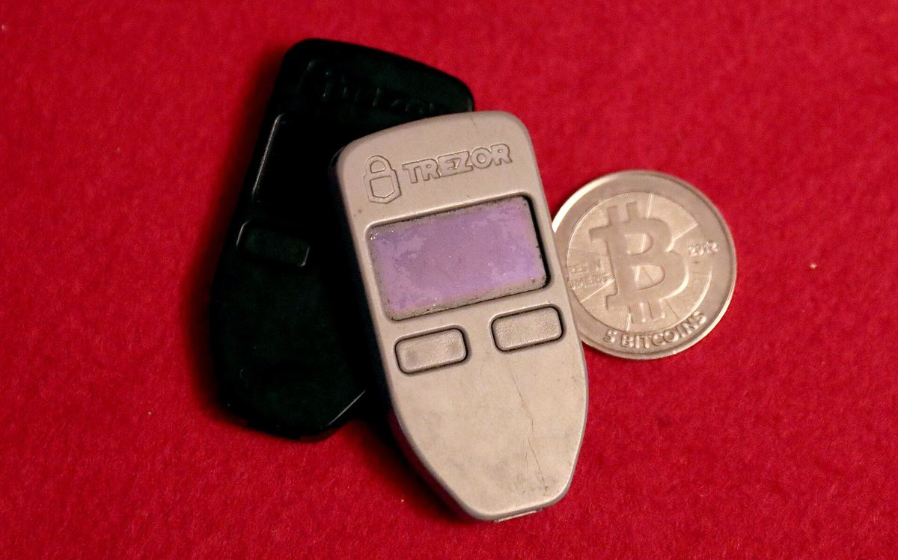

Trezor Safe 5 dari Tokopedia diduga dipasangi alat penyadap
Trezor menilai laporan implan perangkat keras pada Trezor Safe 5 dari seorang pembeli di Indonesia kredibel, namun belum memeriksa perangkatnya di lab.

Poin utama
- Perangkat dibeli Agustus 2026 dari CryptoBilis lewat Tokopedia dan dilaporkan ke Trezor pada 28 Oktober. Trezor mencoret CryptoBilis dari daftar reseller pada 9 Oktober 2026.
- Trezor belum menerima atau memeriksa perangkatnya, tetapi menilai laporan kredibel berdasarkan deskripsi dan wawancara video. Belum ada pembeli CryptoBilis yang melapor kehilangan dana ke Trezor.
- Menurut laporan, ada papan sirkuit tambahan antara mainboard dan layar, lengkap dengan modul seluler dan antena; diduga membaca isi layar (termasuk recovery phrase) dan mengirimnya lewat jaringan seluler.
- Ledger menemukan implan serupa di perangkatnya yang dijual CryptoBilis. Terpisah, Polisi Singapura (28 Okt) mencatat minimal 2 Ledger termodifikasi yang dibeli di toko ritel lokal, dengan kerugian sekitar S$3,5 juta.
Trezor menerima laporan dari seorang pembeli di Indonesia soal Trezor Safe 5 yang diduga dipasangi implan perangkat keras. Perangkat itu dibeli pada Agustus 2026 dari CryptoBilis lewat Tokopedia, dan dilaporkan lewat program responsible disclosure Trezor pada 28 Oktober. Trezor sudah mencoret CryptoBilis dari daftar reseller pada 9 Oktober 2026.
Trezor belum menerima perangkat tersebut, tapi menilai laporan ini kredibel berdasarkan deskripsi dan wawancara video dengan pelapor. Sejauh ini belum ada pembeli CryptoBilis yang melaporkan kehilangan dana ke Trezor.
Bagaimana cara kerjanya? Menurut laporan yang belum diverifikasi Trezor, ada papan sirkuit tambahan di antara mainboard dan layar, lengkap dengan modul seluler dan antena. Implan ini diduga membaca isi layar, termasuk recovery phrase, lalu mengirimnya lewat jaringan seluler setiap kali perangkat dicolok.
Bukan kasus pertama: tim Donjon milik Ledger menemukan implan di perangkat Ledger yang dijual CryptoBilis. Secara terpisah, Polisi Singapura pada 28 Oktober mencatat minimal 2 Ledger termodifikasi yang dibeli di toko ritel lokal, dengan total kerugian sekitar S$3,5 juta.
Kenapa penting
Beli hardware wallet hanya dari situs resmi atau reseller resmi yang tercantum di situs brand-nya. Ini masih dugaan yang belum diperiksa di lab oleh Trezor.
Pernah beli Trezor dari CryptoBilis sejak Maret 2026?
- Pindahkan dana ke wallet baru dengan seed baru secepatnya.
- Jangan pakai seed lama di perangkat apa pun.
- Belum di-setup? Jangan dipakai.
- Hubungi Trezor Support untuk perangkat pengganti.
- Trezor Support tidak akan pernah meminta recovery phrase. Waspadai phishing yang memanfaatkan kasus ini.
Foto ilustrasi: dua hardware wallet Trezor One dan koin Casascius 5 BTC (Gage Skidmore, CC BY-SA 3.0, Wikimedia Commons). Bukan perangkat yang dilaporkan.
Sumber
Tonton versi singkat
Ikuti COIN BRO di Telegram
Dapatkan berita seperti ini lebih cepat di channel kami. Gratis.
Bukan saran finansial. Artikel ini adalah informasi dan edukasi, bukan ajakan membeli atau menjual aset apa pun. Aset kripto berisiko tinggi. Fakta mengikuti sumber yang tercantum; bagian berlabel interpretasi adalah pendapat, bukan fakta. Menemukan kesalahan? Lihat kebijakan koreksi.